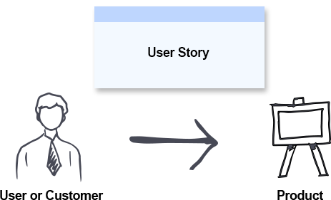
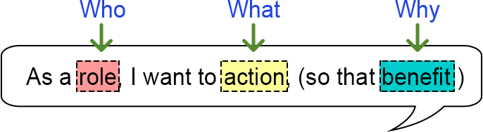
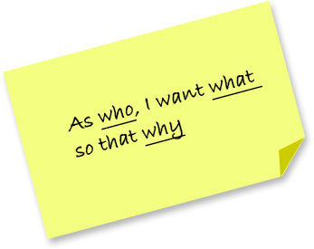
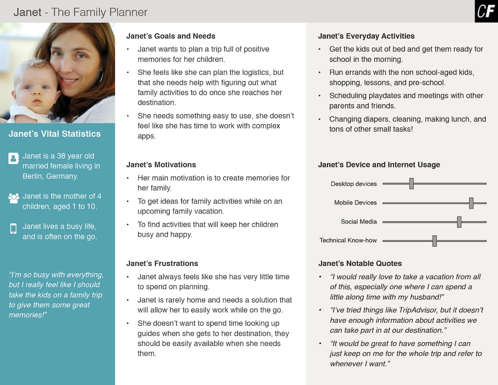

User story and Persona
What is User Story?
In software development and product management, a user story is an informal,
natural language description of one or more features of a software system.
A user story is a tool used in Agile software development to capture a
description of a software feature from an end-user perspective. A user story
describes the type of user, what they want and why. A user story helps to create
a simplified description of a requirement.
User stories are often recorded on index cards, on Post-it notes, or in project
management software. Depending on the project, user stories may be written by
various stakeholders such as clients, users, managers or development team members.

"User stories are part of an agile approach that helps shift the focus from
writing about requirements to talking about them. All agile user stories include
a written sentence or two and, more importantly, a series of conversations about
the desired functionality" - Mike Cohn, a main contributor to the invention of
Scrum software development methodology
Why User Stories?
Requirements always change as teams and customers learn more
about the system as the project progresses. It's not exactly realistic to expect
project teams to work off a static requirements list and then deliver functional
software months later.
With user story approach, we replace big upfront design with a "just enough"
approach. User stories reduce the time spent on writing exhaustive documentation
by emphasizing customer-centric conversations. Consequently, user stories allow
teams to deliver quality software more quickly, which is what customers prefer.
There are quite a few benefits for adopting user story approach in agile
development such as:
- The simple and consistent format saves time when capturing and prioritizing
requirements while remaining versatile enough to be used on large and small
features alike.
- Keep yourself expressing business value by delivering a product that the
client really needs
- Avoid introducing detail too early that would prevent design options and
inappropriately lock developers into one solution.
- Avoid the appearance of false completeness and clarity
- Get to small enough chunks that invite negotiation and movement in the backlog
- Leave the technical functions to the architect, developers, testers, and so on
Basic Concepts of User Story
A user story is a lightweight method for quickly
capturing the "who", "what" and "why" of a product requirement. In simple terms,
user stories are stated ideas of requirements that express what users need.
User stories are brief, with each element often containing fewer than 10 or 15
words each. User stories are "to-do" lists that help you determine the steps along
the project's path. They help ensure that your process, as well as the resulting
product, will meet your requirements.
A user story is defined incrementally, in three stages:
- The brief description of the need
- The conversations that happen during backlog grooming and iteration planning
to solidify the details
- The tests that confirm the story's satisfactory completion
And these, although, are known as the 3C's - Card, Conversation and Confirmation.
User Stories - INVEST
The acronym INVEST helps to remember a widely accepted set
of criteria, or checklist, to assess the quality of a user story. If the story fails
to meet one of these criteria, the team may want to reword it, or even consider a
rewrite (which often translates into physically tearing up the old story card and
writing a new one).
A good user story should be - INVEST:
- Independent: Should be self-contained in a way that allows to be released without
depending on one another.
- Negotiable: Only capture the essence of user's need, leaving room for conversation.
User story should not be written like contract.
- Valuable: Delivers value to end user.
- Estimable: User stories have to able to be estimated so it can be properly
prioritized and fit into sprints.
- Small: A user story is a small chunk of work that allows it to be completed in
about 3 to 4 days.
- Testable: A user story has to be confirmed via pre-written acceptance criteria.
How to Write User Stories?
When getting started with writing user stories, a
template can help ensure that you don't inadvertently start writing technical
tasks:
User Story Template
User stories only capture the essential elements of a
requirement:
- Who it is for?
- What it expects from the system?
- Why it is important (optional?)?
Here is a simple format of user story used by 70% of practitioners:

Role - The user should be an actual human who interacts with the system.
- Be as specific as possible
- The development team is NOT a user
Action - The behavior of the system should be written as an action.
- Usually unique for each User Story
- The "system" is implied and does not get written in the story
- Active voice, not passive voice ("I can be notified")
Benefits - The benefit should be a real-world result that is non-functional or
external to the system.
- Many stories may share the same benefit statement.
- The benefit may be for other users or customers, not just for the user in the
story.

Notes:
User stories are written in everyday language and describe a specific goal (what)
from the perspective of an individual (who) along with the reason (why) he/she
wants it.
In software development, the goal is often a new product feature, the individual is
some type of end-user and the reason is the benefit that the user sees in the
targeted product feature.
User Story Examples:
- As a [customer], I want [shopping cart feature] so that [I can easily purchase
items online].
- As a [manager], I want to [generate a report] so that [I can understand which
departments need more resources].
- As a [customer], I want to [receive an SMS when the item is arrived] so that [I can
go pick it up right away]
In the examples above:
- Role represents the person, system, subsystem or any entity else who will interact
with the system to be implemented to achieve a goal. He or she will gain values by
interacting with the system.
- Action represents a user's expectation that can be accomplished through
interacting with the system.
- Benefits represents the value behind the interaction with the system.
It is not a rule but a guideline that helps you think about a user story by
considering the followings:
- The user story will bring value to someone or certain party (e.g. customers).
- The user story is fulfilling a user's need (e.g. receive an SMS when the item is
arrived)
- There is a reason to support implementing this user story (e.g. customer can go
pick up the item she purchased)
What is a user persona?
A user persona is a fictional representation
of your ideal customer. You’ll start the design process
by conducting user research-building empathy with your target users and
identifying exactly what they need from the product you’re designing.
A persona is generally based on this user research and incorporates the
needs, goals, and observed behavior patterns of your target audience.
Check out the example below:

Why do you need a persona?
Whether you’re developing a smartphone app
or a mobile-responsive website, it’s very important to understand who
will be using the product. In order to solve a real user problem, you
need to have a clear problem statement in mind; in order to write this
problem statement, you first need to understand your users and their
needs. Knowing your audience will help influence the features and design
elements you choose, thus making your product more useful. A persona
clarifies who is in your target audience by answering the following
questions:
- Who is my ideal customer?
- What are the current behavior patterns of my users?
- What are the needs and goals of my users?
- What issues and pain points do they currently face within the given
context?
Understanding the needs of your users is vital to developing a successful
product. Well-defined personas will enable you to efficiently identify and
communicate user needs. Personas will also help you describe the individuals
who use your product, which is essential to your overall value proposition.
Personas help with strategizing and making smart design decisions. They make
real users memorable for the product team, helping to focus efforts and build
empathy.
So, in a nutshell, user personas are crucial if you want to design something
that is useful, desirable, and valuable to your target audience. A solid user
persona is your northern star, guiding your design decisions from start to
finish.
Not only that. Most designers work in multidisciplinary teams where it’s
important to communicate your findings from the user research stage.
Personas encompass all the essential details about your users, presenting
them in a memorable way that everyone can understand-not just designers.
How do you define a user persona?
A well-defined user persona contains four key pieces of information:
- Header
- Demographic profile
- End goal(s)
- Scenario
Before you create a persona, conduct plenty of research to make
sure your personas accurately represent your users. After you gather an
adequate amount of both qualitative and quantitative data, organize the
information into persona groups that represent your ideal customers.
Remember to focus on the major needs of the most important user groups-you
can’t be everything to everyone, nor should you try to be!
Once you’ve got your user groups, you can turn them into user personas.
Let’s take a look at the four steps that go into creating a user persona.
Step 1: Add a header
The header includes a fictional name, image, and quote
that summarizes what matters most to the persona as it relates to your
product. These features aid in improving memorability and keeping your design
team focused on the users they are building the product for.
Let’s imagine you’re designing a travel app. The foundations of your user
persona could look like this:
Name: Savannah Rodriguez
Summary quote: “Take me to undiscovered holiday
destinations away from the tourist traps.”
This first step might seem simple, but these features ensure that your persona
is memorable, keeping the design team focused on who they are designing for.
Step 2: Add a demographic profile
While the name and image can be fictional,
demographic details are factual and based on user research. The demographic
profile includes four main sections: personal background, professional
background, user environment, and psychographics.
Personal background
The personal background includes details such as age,
gender, ethnicity, education, persona group (e.g. working moms), and family
status (e.g. single, married with children, widowed, etc.).
Savannah’s personal background might be described as follows: Savannah, 52
years old, a divorced mother of two, has a Master’s degree in chemistry.
Professional background
The professional background includes details such as
job occupation, income level, and work experience. Here we might add that
Savannah works full-time at a pharmaceutical company and earns around $65,000
per year.
User environment
The user environment represents the physical, social, and
technological context of the user. This section is used to answer questions
like: What technological devices do users have access to? Do they spend most
of their time in a corporate office or a home office? And how often do they
collaborate with others? So, Savannah’s user environment could be in her
office, mostly on a laptop, but also on her iPad when commuting to and from
work.
Psychographics
Psychographics include details such as attitudes, interests,
motivations, and pain points. Creating a psychographic profile enables you to
better understand why your user behaves in a certain way-including why they
use your product.
Let’s continue to imagine you’re designing a holiday-booking app. Some useful
psychographic information to include in your user persona could be:
Savannah enjoys luxury spa retreats, hates tourist traps
Appreciates an element of exclusivity
Enjoys trying authentic local cuisine
Prefers to travel alone or with one other person
Tends to favor quality over economy
Overall, the demographic profile adds an additional layer of realism to a user
persona, boosting empathy when exploring user needs and goals.
Step 3: Add end goal(s)
The end goal is the motivating factor that inspires
action, and answers the question: what do users want or need to accomplish by
using your product? End goals are the main driving forces of your users and
determine what the persona wants or needs to fulfill.
In Savannah’s case, her end goal when using your holiday-booking app is to
discover and book luxurious, off-the-beaten-track holiday destinations.
Step 4: Add a scenario
A scenario is a “day-in-the-life” narrative that
describes how a persona would interact with your product in a particular
context to achieve his or her end goal(s). The scenario usually defines when,
where, and how the narrative takes place. They are typically written from the
perspective of the persona and describe use cases that may happen in the
future.
For example, Savannah’s scenario could start off like this:
“At least once a year, I like to go away on a luxury holiday. I try to
discover places I’ve never been to before and to stick to destinations that
aren’t yet overrun with tourists. I work full time, so I don’t have that much
time to browse and book each individual element of my holiday. Ideally, I’ll
find some kind of package deal that comes with local restaurant recommendations…”
Additional suggestions
Each user persona is typically one page, which
requires you to focus on the essential elements. As a rule of thumb, avoid
adding extra details that cannot be used to influence the design. If it does not
affect the final design or help make any decisions easier: omit it.
Personas are also key to finding ideal customers in real life so you can test
and validate your product with real people. Therefore, make sure each persona
is specific and realistic: avoid exaggerated caricatures, and include enough
detail to help you find real-life representation.
5. Final thoughts
In response to shorter project timelines, personas are the
go-to method for rapidly identifying user needs. By using real data to develop
archetypical users, teams can design for personas with the confidence that
they will also meet the needs of the broader consumer base.
When creating user personas, remember to focus on the context of the product
you’re designing. While you do want to build up a realistic character, there’s
no need to include pointless details that won’t influence the final design. If
you’re designing a holiday-booking app, it doesn’t make sense to include
information on Savannah’s favorite TV programs or what football team she
supports. So, only include details that serve a design purpose!
Overall, personas are helpful throughout the entire product development
phase: from deciding on which features to have in a prototype, to evaluating
the end product. When combined with additional user experience design methods,
such as usability testing and task analyses, personas are vital to launching a
useful and usable solution.
Allikad:
Visual Paradigm
Perplexity
CareerFoundry